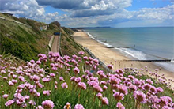

Pier amusements
There's always something happening on the pier or in the water around it. Enjoy a range of family activities from penny machines at the arcade to rock climbing at Rock Reef or an adrenaline rush on the pier zip line.
Learn More →
|
The shopping district
You can probably find everything for all your needs in the shops at Bournemouth. And when you need a break from the retail delights, there's a huge choidce of places to relax and find a bite to eat.
Learn More →
|

Fun on the water
One of the Uk's most popular sandy beaches. Bournemouth has a lot of fun to offer on the water. From jetski to sightseeing tours to party boats, check out whats on offer down on the coast.
Learn More →
|